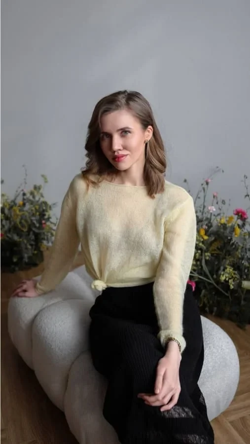
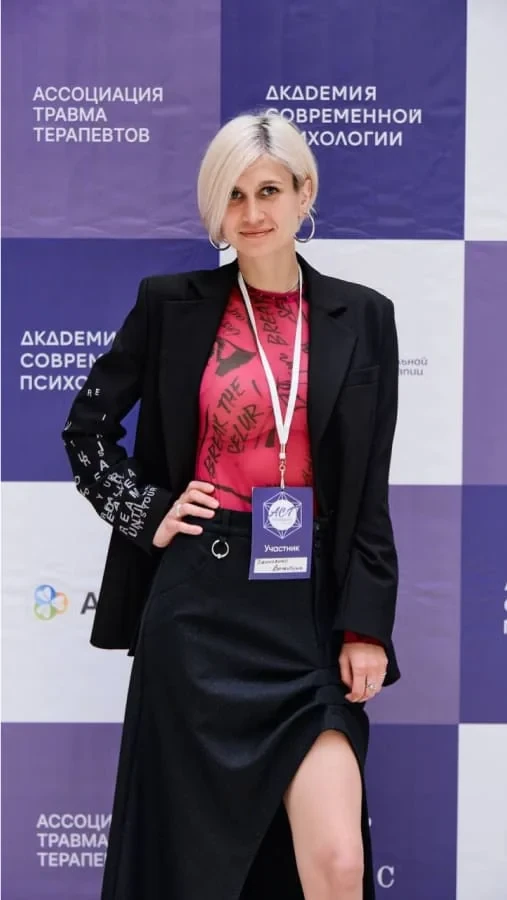
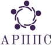
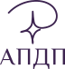

Методы и специализации для практикующих психологов
Профессиональная переподготовка с дипломом и повышение квалификации с удостоверением: 16 курсов по методам психотерапии и 23 курса по специализациям
Выбрать методПрофессиональная переподготовка с дипломом и повышение квалификации с удостоверением: 16 курсов по методам психотерапии и 23 курса по специализациям
Выбрать методДарим грант 30 000 ₽ на обучение профессии психолога-консультанта с нуля
от 8 750 ₽/мес в рассрочку на 24 мес · старт 9 декабря · диплом
 Профессиональная переподготовка · диплом
Профессиональная переподготовка · диплом Профессиональная переподготовка · диплом
Профессиональная переподготовка · диплом −10 % до 31 октябряПрофессиональная переподготовка · диплом
−10 % до 31 октябряПрофессиональная переподготовка · диплом Профессиональная переподготовка · диплом
Профессиональная переподготовка · диплом Профессиональная переподготовка · диплом
Профессиональная переподготовка · диплом Повышение квалификации · удостоверение
Повышение квалификации · удостоверениеПоток уже идёт, но ещё можно присоединиться и догнать группу
 Последний шанс
Последний шанс Последний шанс
Последний шанс Последний шанс
Последний шанс Последний шанс
Последний шанс46 программ: от профессии с нуля до узких специализаций

Выберите подход, и мы покажем, кто его преподаёт
Ксения Белова
Психотерапевт
Ведёт MBT-группы, обучалась в Институте Анны Фрейд.
Дарья Зюзина
Клинический психолог
Аккредитована Минздравом. Старший преподаватель СПбГУ, психолог благотворительной организации «Ночлежка».

Александр Шакиров
Психолог-консультант
Магистр психологии. Учился КПТ в Институте Бека и Оксфордском центре КПТ.

Анастасия Храмцова
Психолог-консультант
Частная и клиническая практика больше 10 лет, ведёт терапевтические группы. Член АКПН.

Всеволод Ардов
Психотерапевт, супервизор
(F)ACT, EFT, КПТ, MI и CFT с международными квалификациями. Автор подкаста «Помогающие».

Юлия Солоницына
Психотерапевт
Ведёт терапевтические группы, сертифицированный специалист в ACT и CFT.

Мария Королева
Психолог, групповой терапевт
Преподаватель и супервизор. Член ассоциации контекстуально-поведенческой науки.

Олеся Шаповал
Психолог-консультант, супервизор
Автор телеграм-канала «Безопасное место».

Иван Мыздриков
Контекстуально-поведенческий психолог
ACT, CFT, EET. Автор проекта «Право на слово».
Учим только методам с доказательной базой и 70 % занятий отдаём практике
Отрабатываем навыки на реальных случаях из практики
Тройка
К паре добавляется наблюдатель. За три раунда каждый побывает в каждой роли.
Записаны заранее и открываются на платформе раз в неделю
Вживую и с камерой: преподаватель отвечает на вопросы и проводит практику
Литература, отработка навыков и эссе с проверкой и обратной связью
Разбор ваших случаев с опытным специалистом: например, РПП или зависимости
Установленного образца. Лицензия Л035‑01271‑78/00176689
Конференции, встречи и мастер-классы, сообщество выпускников. Для тех, кто учится с нуля, есть отдельный кураторский отдел
Учиться вместе веселее. Поэтому вокруг курсов у нас есть конференции, открытые встречи и сообщество, где всегда подскажут
 ACT-Petersburg. Episode 4 · 2026
ACT-Petersburg. Episode 4 · 2026
Четвёртый год подряд собираем сотни коллег на ACT-Petersburg: доклады, воркшопы и разговоры в перерывах, ради которых многие и приезжают
Открытые онлайн-встречи для психологов и студентов: практика, супервизии и интервизии с практикующими экспертами. Приходите, даже если ещё не учились у нас: это бесплатно
Смотреть расписаниеКурс закончился, а коллеги остались. В закрытом чате разбираем случаи, проводим интервизии и обсуждаем свежие исследования. До 20 встреч в месяц, и все бесплатные
Как вступитьТерапия для тех, кто «держит себя в руках», даже когда это мешает жить. Учим методу Томаса Линча из первых рук: мы первыми перевели его в России
Обучение RO DBTОценки на независимых площадках, истории студентов и организации, с которыми мы работаем вместе

«Сравнила несколько школ и выбрала Академию»Елена Ершова · Психолог-консультант
«Проходить переквалификацию на психолога, когда ты без пяти минут врач? Почему бы и да!»

Екатерина Петроченко
Психолог-консультант
«Для меня это первое образование в сфере психологии, и я рада, что выбрала именно этот курс»
Анастасия Лукоянова
Психолог-консультант

«Максимальная отдача от преподавателей Академии»Евгений Кутузов · КПТ
«Я была знакома с основами КПТ, но только начинала развиваться в этом направлении»
Уже через месяц я применила «Дневник мыслей» на сессии с клиентом и стала анализировать случаи с позиции КПТ-терапевта

Тамара Карькова
КПТ. Оксфордская модель
«Я была начинающим психологом, и сначала мне было страшно работать в учебных тройках»
Уже через два месяца практика стала комфортной. Я освоила техники для работы, обрела профессиональное окружение, а позже вернулась в Академию на второй курс

Дана Качура
КПТ. Оксфордская модель

«10 из 10: современно, качественно, насыщенно»Эльвира Архипова · КПТ
«Однозначно рекомендовала бы курс тем, кто находится на выборе»

Екатерина Голуб
Психолог-консультант
«После профессиональной переподготовки я поняла, что для начала консультативной практики мне нужно выбрать модальность»
Теперь я применяю полученные знания в работе с клиентами, определилась с направлением дальнейшего развития и продолжаю обучение в Академии

Ксения Вакорина
КПТ. Оксфордская модель

«Самое важное для меня — это много практики»Владислав Вдовиченко · КПТ
«Я хотела расширить профессиональную базу и научиться работать с разными клиентами»
С начала курса я стала применять ABC-модель на сессиях. Работа с клиентами стала понятнее и структурнее, а я чувствовала всё больше уверенности в своих силах

Елизавета Вакула
КПТ. Оксфордская модель
«Я пришла на курс абсолютным новичком. Начинать консультировать было очень волнительно»
Во время обучения я нашла первых клиентов. Полученные знания помогали выстраивать структуру сессий и план работы, поэтому я чувствовала себя увереннее

Валерия Чуприянова
КПТ. Оксфордская модель

«Колоссальный объём знаний»Дарья Зубкова · КПТ

«Любой преподаватель готов был ответить на твои вопросы, любой был готов подсказать, помочь, поддержать, и это очень ценно и важно»Валентина Денисенко · Психолог-консультант

«Много поддержки и заботы для новичков в профессии»Юлия Марнова · КПТ

«Начала свою практику после этого курса»Кристине Сафарянс · КПТ

«Всё очень продуманно и удобно для студентов»Яна Чернавских · КПТ
Профессиональные ассоциации, клиники, медиа и благотворительные проекты


С чего хотите начать?
Выберите вариант, и менеджер подготовится к разговору заранее
Расскажем о профессии психолога-консультанта и гранте 30 000 ₽ на обучение
Подберём курс по подходу: у нас 16 курсов по методам, от КПТ до схема-терапии
Покажем 23 курса по специализациям: травма, РПП, сексология и другие
Зададим пару вопросов и предложим варианты под ваш опыт
Заявка отправлена
Спасибо! Свяжемся с вами в рабочее время там, где вам удобно.